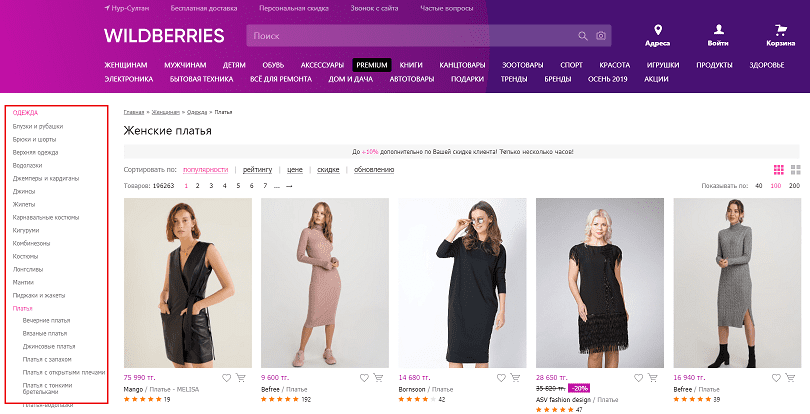
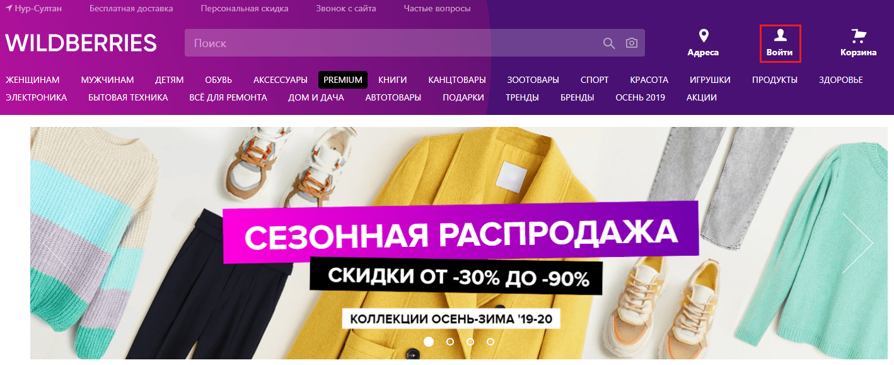
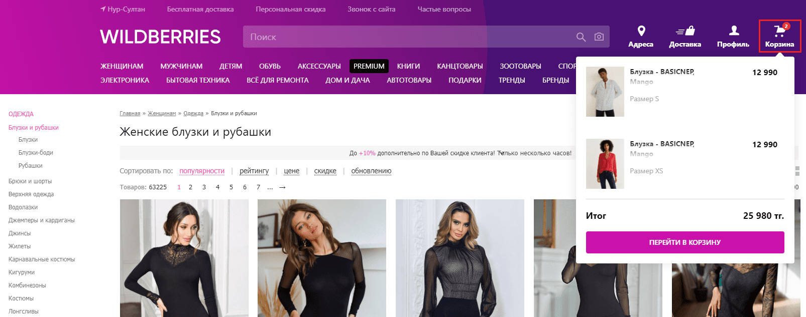
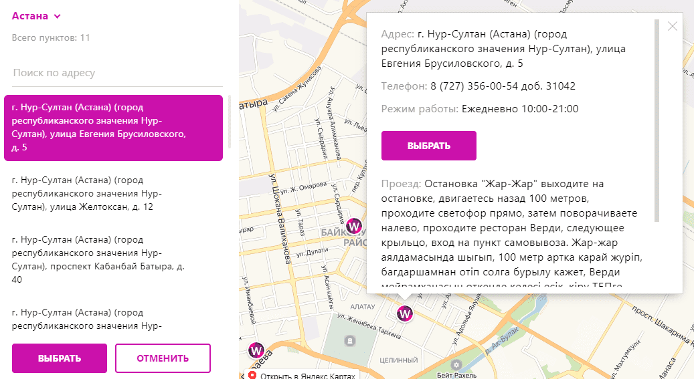

Вопросы и ответы
Выберите нужный раздел слева для получения справки или воспользуйтесь поиском
Частые вопросы
Как отменить доставку?
Если при оформлении заказа Вы допустили ошибку, отменить товары можно самостоятельно в разделе «Покупки» в течение 10 минут.
Также Вы сможете отказаться от неактуальных товаров при их получении. Для отказа от товаров в момент получения, потребуется назвать код, который указан в разделе «Покупки» («Доставки»).
Куда и когда вернутся деньги за возврат?
Денежные средства за товар, оплаченный «Онлайн» автоматически возвращаются на карту, с которой производилась его оплата. Мы перечисляем деньги в течение нескольких минут. В этот момент в «Истории операций» раздела «Баланс», Вы увидите операцию «Возврат денег». Далее срок зачисления денег на карту зависит от условий банка, в котором она открыта.
При возврате денег на реквизиты, срок перечисления составляет до 7 дней.
Почему нельзя оплатить заказ при получении?
Оформить заказ можно только с «Онлайн» оплатой — для того, чтобы минимизировать контакты с денежными средствами и банковскими картами.
Можно ли вернуть нижнее белье, ювелирные изделия?
При доставке в пункт выдачи заказов или курьером, у наших покупателей есть возможность проверить данные товары, чтобы убедиться в соответствии заказу и отсутствии дефектов. Также можно приложить их к себе, чтобы оценить, подходит ли товар по модели, размеру и другим характеристикам. Если товар не подошел – покупатель может отказаться от него в момент получения при условии сохранения товарного вида. После покупки товары данных категорий можно вернуть только в случае выявления производственного брака.
Когда поступит заказ?
В настоящее время, в связи с режимом ЧС, иногда возможны задержки доставки товаров. В этом случае статус товаров изменяется на «Задерживается» в разделе «Доставки». Когда такое случается, мы стараемся максимально оперативно решать возникающие сложности, чтобы доставить товары как можно быстрее. Ожидайте, пожалуйста, их поступления. Как только товары поступят, мы проинформируем Вас об этом в Личном кабинете.
Как изменить способ доставки?
Мы просим выбирать удобный способ доставки в момент оформления заказа.
- Если доставка оформлена в пункт выдачи заказов, то получить товары можно будет только в пункте. Изменить способ доставки на «Курьером» нет возможности.
- Если доставка оформлена курьером, то товары будут доставлены по указанному адресу. Однако, если Вы не хотите ожидать курьера, то товары можно получить в пункте выдачи заказов, где курьер получает товары для доставки. Адрес можно будет увидеть в разделе «Покупки», после поступления товаров в пункт.
Изменение номера телефона
Изменить номер телефона Вы можете в разделе «Профиль». В случае, если старый номер не активен, Вам необходимо связаться с нами любым удобным способом, который указан в разделе «Контакты». При обращении необходимо сообщить старый номер телефона и новый номер. Обращаем Ваше внимание на то, что на балансе не должно быть денежных средств, бонусов, задолженностей и активных оплаченных доставок.
Изменение данных (ФИО, дата рождения)
Изменить ФИО Вы можете в разделе «Профиль», при условии отсутствия денежных средств на балансе, задолженностей и активных заказов.
Изменение даты рождения невозможно.
Как получить оплаченный заказ?
Для того, чтобы получить оплаченные товары, Вам потребуется код, который указан в разделе «Покупки» (полная версия сайта) или разделе «Доставки» (мобильное приложение). Обратите внимание, что код ежедневно обновляется.
Поиск и выбор товара
Поиск товара
Выберите подходящий способ: поисковая строка меню категорий
Введите поисковой запрос, например: джинсы женские
Выводятся все женские джинсы:

На главной странице сайта представлено меню с основными разделами:
Выбрав определенную категорию, можем сразу перейти в нужный подраздел:
После открытия каталога, подразделы останутся слева:
Вы можете воспользоваться сортировкой и фильтрами.
Товары можно сортировать по нескольким признакам: по популярности, рейтингу, цене, скидке и обновлению:
В главном меню можно перейти к брендам:
Переходим в специализированную бренд-зону, которая оформлена в соответствии с пожеланиями партнёра:

Вы можете посмотреть все бренды на определенную букву, если забыли его название полностью:
Далее выбрать, категорию товара, которую производит нужный бренд:
Или выбрать марку по логотипу бренда и перейти на нужную страницу:
Как подобрать подходящий размер
Для каждого бренда представлена индивидуальная таблица размеров.
- Для корректного выбора нажмите на ссылку «Таблица размеров». После нажатия откроется таблица соответствия размеров, предоставленная производителем.
- Чтобы сравнить соответствие размера производителя российскому размеру и параметрам таблицы, наведите курсор на нужный размер.
При выборе размера Вы можете ориентироваться на информацию в блоке «Параметры» и на отзывы других Покупателей.
Ожидается ли поступление товара и в какие сроки
Поступление товара, которого нет в наличии, возможно в двух случаях:
- Ожидается новое поступление товара.
- Клиент отказался от заказанного товара при получении или вернул товар после приобретения согласно правилам возврата.
Если интересующего Вас товара нет в наличии, его можно добавить в «Лист ожидания».
В «Листе ожидания» отображается информация о том, планируется ли новое поступление товара и в какие сроки.
Когда товар из «Листа ожидания» будет доступен для покупки, он переместится вверх списка товаров со статусом «Есть на складе».
Уточнение дополнительной информации по товару
Вы не нашли нужной информации по товару в его описании? Задайте вопрос нашему поставщику.
Для того, чтобы задать вопрос к товару, на сайте:
- Откройте нужный товар
- Выберите вкладку «Вопросы», которая расположена внизу страницы товара
- Ознакомьте с правилами оформления вопроса
- Напишите текст вопроса
- Нажмите кнопку «Отправить»
Ответы на вопросы предоставляются в течение 3 рабочих дней. Вопросы публикуются вместе с ответом. Ответы на все заданные ранее вопросы Вы можете просматривать в разделе Личного кабинета «Вопросы к товару».
Возможность отложить товар для дальнейшего выбора
Понравившийся товар можно добавить в раздел «Отложенные товары», чтобы в дальнейшем быстро найти его и оформить заказ.
Добавить в раздел «Отложенные товары» можно только тот размер, который есть в наличии.
Можно ли добавить товар в "Резерв"
Резервирование товара до оформления заказа отсутствует на нашем сайте как отдельная функция.
Товар резервируется автоматически, после оформления и подтверждения заказа.
Регистрация
Как зарегистрироваться
Оформить заказ в нашем интернет-магазине может только зарегистрированный пользователь.
Вы можете зарегистрировать Личный кабинет в интернет-магазине Wildberries через аккаунты социальных сетей.
Или зарегистрироваться по номеру телефона на нашем сайте.
-
В правом верхнем углу сайта необходимо нажать на кнопку «Войти», в появившейся форме указать номер телефона и код подтверждения, который поступит на Ваш номер после нажатия на кнопку «Получить код».
 - После входа в Личный кабинет Вы можете указать в профиле пол, дату рождения и адрес электронной почты, чтобы подписаться на email рассылки об Акциях и секретных распродажах.
Не приходит код подтверждения
Если Вам не поступил код подтверждения, необходимо:
- Убедиться, что номер телефона введен корректно (номер вводится, начиная с кода оператора).
- Посмотреть, не возникла ли ошибка «Указанный Вами телефон уже используется».
- Проверить, не потерял ли Ваш телефон мобильную сеть.
- Нажать кнопку «Выслать ещё раз» и подождать 5-10 минут.
- Если код подтверждения не поступил, для разрешения возникшей ситуации свяжитесь с нами с указанного при регистрации номера телефона.
Оформление заказа
Как оформить заказ на сайте
Оформление заказа в интернет-магазине Wildberries доступно только зарегистрированным Пользователям. Войдите в Личный кабинет под своим логином или по номеру телефона, если Вы у нас впервые.
.png)
Для оформления заказа:
- Добавьте понравившиеся товары в «Корзину» и перейдите в нее
- Проверьте добавленные в заказ товары. При наличии промокода, который необходимо ввести вручную, нажмите «У меня есть промокод» введите его в появившемся поле и нажмите «Применить»
- Выберите способ доставки, доступный в Вашем регионе
- Выберите способ оплаты
- При необходимости можно выбрать другого получателя, указав его данные. Для этого необходимо поставить галку в поле «Другой получатель»
- Завершите оформление заказа с помощью кнопки «Оформить заказ»
Заказ будет автоматически подтвержден на доставку и отобразится в разделе Личного кабинета «Доставки».
Если для оформления заказа потребуется дополнительная информация, мы свяжемся с Вами.
Для оформления заказа:
-
Выберите и добавьте товары в «Корзину»:
-
Нажмите кнопку «Перейти в корзину» или продолжите выбор товаров на сайте. В корзину можно перейти двумя способами:
-
Нажать кнопку «Перейти в корзину» в карточке товара, после его добавления в «Корзину»:
-
Нажать на значок «Корзина» в правом верхнем углу сайта:

-
-
В «Корзине» Вы можете: проверить Ваш заказ, при необходимости изменить количество товара, отложить товар в раздел «Отложенные товары», для последующего оформления заказа, выбрать товары для заказа или удалить товар, если передумали его заказывать:
-
Выберите удобный для Вас способ доставки, доступный в Вашем регионе: пункт выдачи курьер
Пункт выдачи
Вы можете самостоятельно забрать Ваш заказ в удобном Вам пункте выдачи.
У нас более 150 пунктов выдачи с комфортными примерочными, где Вы сможете примерить заказанные товары перед покупкой.
-
Выберите пункт выдачи. Для оформления доставки в другой пункт выдачи необходимо воспользоваться кнопкой «Выбрать другой»:
-
Перед Вами появится список пунктов выдачи и их расположение на карте. Используя меню слева, необходимо выбрать пункт выдачи из списка:
-
При работе с картой, которая находится справа, Вы можете найти нужный пункт выдачи на карте и выбрать его для получения заказа:
 -
После добавления адреса Вы сможете увидеть предполагаемую дату поступления заказа в пункт выдачи:
-
Далее необходимо выбрать способ оплаты:
.png)
-
При необходимости Вы можете добавить получателя, поставив галку в поле «Другой получатель» и указав его данные:
После выбора всех необходимых параметров необходимо нажать кнопку «Оплатить заказ»:
Курьер
Наши курьеры доставят заказ по Вашему адресу. В случае если товар Вам не подошел, Вы можете сразу вернуть его курьеру.
-
Чтобы указать адрес доставки, воспользуйтесь кнопкой «Выбрать адрес»:
-
Перед Вами откроется окно с картой:
-
Вы можете добавить адрес доставки двумя способами:
Ввести адрес в поисковой строке или указать место доставки на карте:
-
После добавления адреса Вы увидите предполагаемую дату доставки заказа:
-
Далее необходимо выбрать способ оплаты и завершить оформление заказа:

Для Вашего удобства мы автоматически подбираем последний выбранный адрес и способ оплаты, чтобы после перехода в Корзину Вы могли сразу оформить заказ, не выбирая параметры доставки заново.
Обратите внимание: Оформляя заказ в интернет-магазине, Вы автоматически соглашаетесь с договором Публичной оферты. -
Разделы Личного кабинета
Изменение номера телефона
Для изменения номера телефона:
-
Зайдите в раздел Личного кабинета «Личные данные»
-
Нажмите на значок рядом с номером телефона:
-
Получите смс с кодом подтверждения на прежний номер телефона, введите полученный код:
-
Введите новый номер телефона и подтвердите действие, нажав на кнопку «Получить код», после этого введите код, полученный в смс-сообщении, которое поступит на новый номер:
Невозможно указывать телефонный номер, который используется в другом Личном Кабинете. В этом случае код подтверждения отправлен не будет, а номер заблокируется.
Изменение адреса электронной почты
Для изменения адреса электронной почты:
- Зайдите в раздел Личного кабинета «Личные данные»
- Кликните на значок рядом с адресом электронной почты
-
Введите смс-код подтверждения, который поступит на указанный в личном кабинете номер телефона, после этого введите новый email и подтвердите его, перейдя по ссылке в поступившем письме:
Обратите внимание: Вы можете указать только тот адрес электронной почты, который ранее не был зарегистрирован в нашем интернет-магазине.
Изменение ФИО в Личном кабинете
Для изменения ФИО в Личном кабинете необходимо войти в раздел «Личные данные», нажать на значок рядом с ФИО и ввести код, который поступит в смс-сообщении:
Важно: если на балансе есть денежные средства или в личном кабинете образовалась задолженность за услугу доставки, изменение ФИО невозможно до погашения задолженности или возврата денежных средств.
Раздел «Отзывы»
Посмотреть оставленные отзывы, удалить их, увидеть оценку полезности отзыва другими Покупателями Вы можете в разделе Личного кабинета «Отзывы».
Для того, чтобы найти отзыв по товару, оставленный ранее, в общем списке отзывов, можно воспользоваться поиском вверху раздела.
Удаление отзыва
В разделе Личного кабинета «Отзывы» есть возможность удалить ранее оставленный отзыв:
-
Зайдите в раздел «Отзывы»
-
Выберите отзыв
-
Нажмите кнопку «Удалить отзыв»
Раздел «Вопросы к товару»
В разделе Личного кабинета «Вопросы к товару» можно посмотреть заданные вопросы и ответы на них:
.png)
Раздел «Проверка товара»
В разделе Личного кабинета «Проверка товара» вкладка «Возврат при получении» Вы можете оформить заявку на проверку товара, от покупки которого Вы отказались по причине брака или несоответствия заявленным характеристикам.
В данном разделе во вкладке «Возврат после оплаты по браку» Вы можете оставить заявку на проверку товара в случае выявления брака или несоответствия заявленным характеристикам.
Выберите необходимый способ: возврат при получении возврат после оплаты по браку
Подать заявку можно в статусах товара «Готов к получению», «Передано курьеру», «Возврат». В статусе товара «Возврат» на оформление заявки останется 24 часа.
Чтобы оформить заявку:
- Зайдите в раздел Личного кабинета «Проверка товара»
- Вкладка «Возврат при получении»
- Нажмите кнопку «Создать заявку»
- Выберите товар из списка
- Загрузите сделанные Вами фото и видео товара
- В поле «Ваш комментарий» укажите причину возврата
- Нажмите кнопку «Отправить»
Срок рассмотрения заявки до 3 рабочих дней.
Что должно быть на фото?
- Обзорная фотография товара целиком
- Крупный план маркировки товара (навесная бирка, этикетка или ярлык должны содержать общую информацию, указанную производителем)
- Фото товара в индивидуальной упаковке с нашей маркировкой
- Для товаров из раздела «Красота» - дата изготовления, срок хранения или номер партии
- Фотография дефекта или несоответствия
Предмет должен быть в фокусе, не размытым, его маркировка четкой и хорошо читаемой.
Размер каждого фото не должен превышать 2 МБ. Поддерживаемые форматы: JPG, JPEG, PNG.
Размер видео не должен превышать 100 МБ. Поддерживаемые форматы: mp4, webm, mov.
- Зайдите в раздел Личного кабинета «Проверка товара»
- Откройте вкладку «Возврат после оплаты по браку»
- Нажмите кнопку «Создать заявку»
- Выберете товар из списка (в нем будут отображены приобретенные ранее товары)
- Загрузите фото и видео товара
- Опишите дефект, написав его в поле «Ваш комментарий»
- Завершите оформление заявки
Срок рассмотрения заявки до 5 рабочих дней.
Что должно быть на фото?
- Обзорная фотография товара целиком
- Крупный план вшивной бирки
- При наличии пакета со штрих-кодом, фото штрих-кода
- Предполагаемый дефект товара
- Предмет должен быть в фокусе, не размытым, его маркировка четкой и хорошо читаемой
Размер каждого фото не должен превышать 2 МБ. Поддерживаемые форматы: JPG, JPEG, PNG.
Размер видео не должен превышать 100 МБ. Поддерживаемые форматы: mp4, webm, mov.
Удаление Личного кабинета
Для удаления Личного кабинета:
- Зайдите в раздел Личного кабинета «Личные данные»
-
Нажмите на ссылку «Удалить личный кабинет»:
- Укажите причину удаления
-
Введите смс-код подтверждения, который будет отправлен на номер телефона, указанный в Личном кабинете:
- Нажмите кнопку «Удалить»
Срок удаления Личного кабинета - 30 дней.
Раздел «Безопасность»
В данном разделе Вы можете увидеть активные сессии и данные об устройствах и ip-адресах, с которых был выполнен вход в Ваш личный кабинет.
Если какая-либо сессия из списка кажется Вам ненадежной, необходимо ее завершить, нажав на значок или на кнопку «Завершить другие сеансы»:
Скидки и промокоды
Скидка постоянного покупателя
- Размер Вашей скидки постоянного покупателя Вы можете увидеть в разделе «Скидка» Личного кабинета.
- Скидка покупателя не распространяется на некоторые категории товаров и некоторые бренды. Размер Вашей скидки постоянного покупателя может варьироваться в зависимости от товаров. Подробнее в разделе «Скидка» Личного кабинета.
Скидка постоянного покупателя автоматически применяется в «Корзине».
Автоматическое применение промокодов в корзине
Промокод — это специальный код, который предоставляет скидку на определенную группу товаров и имеет ограниченный срок действия.
Большинство промокодов применяются в «Корзине» автоматически. Некоторые промокоды необходимо ввести в специальное поле в «Корзине» при оформлении заказа. К одной единице товара единовременно может быть применен только один промокод.
Скидка постоянного покупателя не применилась в заказе
Скидка постоянного покупателя — это скидка, предоставляемая интернет-магазином Покупателю на определенных условиях.
Если скидка постоянного покупателя в заказе меньше фактической, указанной в разделе «Скидка», необходимо проверить:
- Нет ли ограничений на применение скидки постоянного покупателя на оформляемый товар, перечисленных в разделе «Скидка».
- Не относится ли данный товар к акции, при которой не действует скидка постоянного покупателя.
Данная информация будет указана на баннере акции или в условиях акции.
Стоимость заказанного товара на сайте стала ниже
Стоимость товара на сайте с учетом скидок может изменяться как в большую, так и в меньшую сторону, в зависимости от проводимых акций.
Но стоимость товара в заказе фиксируется на момент его оформления. Поэтому Вы приобретаете товар по той стоимости, которая указана в Вашем заказе.
Оплата заказа
Способы оплаты заказа
В настоящее время оплата заказов в нашем интернет-магазине осуществляется банковской картой онлайн, в момент оформления заказа.
При получении заказа Вам потребуется назвать сотруднику пункта выдачи заказов или курьеру код, который будет отображен в разделе «Покупки» («Доставки») в день получения заказа.
Отказ от заказа
Как отменить заказ
-
Если Вы ошиблись при оформлении заказа, отменить его можно в течение 10 минут, с момента оформления.
- Перейдите в раздел «Покупки» («Доставки»)
- Выберите нужную группу товаров
- Нажмите «Подробнее о доставке»
- Нажмите «Отменить доставку»:
- Выберите товары для отмены
- Подтвердите отмену товаров:

-
Если с момент оформления заказа прошло больше 10 минут, отказаться от неактуальных товаров можно будет при получении заказа.
При отказе от товаров в момент получения потребуется назвать код, указанный в разделе «Покупки» («Доставки») Личного кабинета.
Доставка товаров
Как изменить способ доставки
-
Доставка в пункт выдачи заказов – изменить способ доставки на «Курьером» нет возможности.
-
Доставка курьером – изменить способ доставки на «Пункт выдачи» нет возможности. Однако, после поступления товаров в пункт, если товар еще не передан курьеру, его можно получить в этом пункте выдачи заказов.
Увидеть адрес пункта, в котором находится товар, можно в разделе «Покупки» («Доставки») Личного кабинета, кликнув по ссылке «Заказ можно забрать в пункте выдачи»:
Как уточнить время приезда курьера
Курьер свяжется с Вами в день доставки для согласования времени, или Вы можете связаться с курьером самостоятельно.
В день доставки, после того, как товары будут переданы курьеру, в разделе «Покупки» («Доставки») Вы сможете увидеть информацию о курьере, который доставит заказ. Для этого нужно нажать «Подробнее о доставке»:
Также информация о курьере поступит в виде уведомления в Личный кабинет.
Срок доставки товаров
Срок доставки товара зависит от того на каком складе находится выбранный товар и адреса доставки.
При добавлении товаров в «Корзину» Вы видите ориентировочные сроки доставки тех или иных товаров:
После оформления заказа ориентировочные сроки поступления товаров отображаются в разделе «Покупки» («Доставки»):
О поступлении товаров мы обязательно проинформируем Вас с помощью уведомления в Личном кабинете.
Срок хранения товаров в пункте выдачи
Актуальную информацию о сроке хранения товаров можно увидеть в разделе «Покупки» («Доставки»), после их поступления в пункт выдачи заказов:
Получение товаров другим человеком
-
Если Вы оформляете заказ для другого человека, указать его данные можно в момент оформления заказа в «Корзине»:
-
Опуститесь вниз страницы и поставьте галку «Другой получатель»:

-
В открывшейся форме укажите ФИО и номер телефона получателя:
- Завершите оформление заказа, нажав кнопку «Оформить заказ».
Для получения товаров, получателю потребуется назвать код, указанны в разделе «Покупки» («Доставки») Личного кабинета.
-
-
Если Вы рассчитывали получить товары самостоятельно, но ситуация изменилась, то другой человек может получить поступившие товары по коду, который отображается в разделе «Покупки» («Доставки») Личного кабинета:
Для получения товаров, потребуется назвать фамилию и имя, указанные в Личном кабинете, и код для получения заказа.
Получателю будут выданы все поступившие товары. Обязательно попросите получателя проверить товары в момент получения и сразу отказаться от товара, если будет обнаружен дефект или несоответствие.
Возврат товара
Правила возврата
Выберите необходимый способ: Возврат товара надлежащего качества Возврат товара по причине брака/несоответствия
Срок возврата товара надлежащего качества составляет 21 день с момент получения.
Условия:
- Полная комплектация товара.
- Товар не был в употреблении.
- Сохранен товарный вид (не нарушены пломбы, фабричные ярлыки, этикетки, есть заводская упаковка, если она составляет часть товарного вида изделия).
- Сохранены потребительские свойства.
- Наличие товарного или кассового чека.
- Товар не должен входить в перечень товаров надлежащего качества, не подлежащих возврату после покупки, представленном в Приказе Министерства экономики и торговли от 18.06.1997 № 100.
- Возврат такого товара осуществляется через оформление заявки на проверку товара в Личном кабинете, разделе «Проверка товара», вкладка «Возврат после оплаты по браку».
- Возврат товара по причине производственного дефекта возможен в течение гарантийного срока или срока годности.
- В случае возврата товара по причине несоответствия, обязательным является наличие упаковки товара.
Для возврата товара наличие чека не обязательно, так как информация о покупках сохраняется в Вашем Личном кабинете.
Оформление возврата товара по причине «Не подошло»
Вернуть товар надлежащего качества, который не подошел, можно в течение 21 дня с момента покупки. Обязательным является сохранение его товарного вида и полной комплектации. Товар должен подлежать обмену и возврату после покупки.
Товар можно вернуть:
- В пункте выдачи заказов (предварительного оформления возврата не требуется).
- С выездом курьера (требуется оформление заявки на выезд курьера в Личном кабинете).
Для оформления возврата товара с выездом курьера:
-
Перейдите в раздел «Покупки» и опуститесь до блока «История покупок».
-
Выберите нужный товар и нажмите «Вернуть товар».
-
Нажмите кнопку, которая появится в правом верхнем углу «Оформить возврат»:

-
В открывшемся окне выберите «Вызов курьера»:
-
Выберите причину возврата товара из предложенных и нажмите «Продолжить»:
-
Выберите или укажите адрес выезда курьера за возвратом.
-
Укажите удобную дату и интервал выезда.
-
Ознакомьтесь и согласитесь с условиями возврата товара.
-
Завершите оформление заявки на возврат товара курьером:
В день выезда курьер свяжется с Вами для согласования времени.
После передачи товара курьеру и поступления отчета от него, деньги за товар будут возвращены на счет, с которого производилась его оплата. Подробнее о сроке возврата денег можно прочитать в разделе Сроки возврата денег.
Оформление возврата товара по причине «Брак»/«Не соответствует заказу»
Если после покупки товара был выявлен производственный дефект товара или его несоответствие заказанному, необходимо оформить заявку на проверку товара в Личном кабинете.
Оформить заявку на проверку товара необходимо в разделе «Проверка товара» Личного кабинета, вкладке «Возврат после оплаты по браку».
- К заявке необходимо приложить несколько фотографий (до 5 шт) и можно приложить небольшое видео, если оно необходимо для подтверждения дефекта или несоответствия. Также необходимо описать дефект.
- Заявка рассматривается в срок до 5 рабочих дней.
- При одобрении заявки Вы сможете вернуть товар в ближайшем пункте выдачи заказов или курьером.
- Оформить выезд курьера за возвратом товара по одобренной заявке можно в разделе «Проверка товара», вкладке «Возврат после оплаты по браку».
Для оформления заявки на проверку товара по браку/несоответствию:
-
Перейдите в раздел «Проверка товара», вкладку «Возврат после оплаты по браку».
-
Нажмите «Создать заявку»:
-
Выберите товар, который Вы хотите вернуть по причине брака:
.jpg)
-
Добавьте фотографии товара и дефекта и видео, если оно необходимо.
-
В комментарии опишите причину возникновения дефекта:
-
Завершите оформление заявки.
Заявка рассматривается в срок до 5 рабочих дней. После одобрения заявки товар можно будет вернуть в пункте выдачи заказов или курьером.
После одобрения заявки, появится кнопка «Курьер» возле нее.
-
Нажмите кнопку «Курьер»:
-
Выберите или добавьте адрес выезда курьера.
-
Выберите дату и интервал.
-
Ознакомьтесь и согласитесь с условиями возврата товара:
.jpg)
-
Завершите оформление заявки на возврат товара курьером.
После возврата товара курьеру и поступления отчета от него, денежные средства за товар будут возвращены на счет, с которого товар был оплачен. Подробнее о сроке возврата денег можно прочитать в разделе Сроки возврата денег.
Возврат денег
Способы возврата денег
- При возврате товара, оплаченного онлайн, денежные средства возвращаются покупателю на карту, с которой производилась оплата.
- При невозможности возврата средств на карту, с которой производилась оплата, возврат средств осуществляется на реквизиты.
Сроки возврата денег
Как оформить возврат денег
При возврате товара оплаченного онлайн, возврат денег осуществляется автоматически. Никаких дополнительных действий с Вашей стороны для этого не требуется.